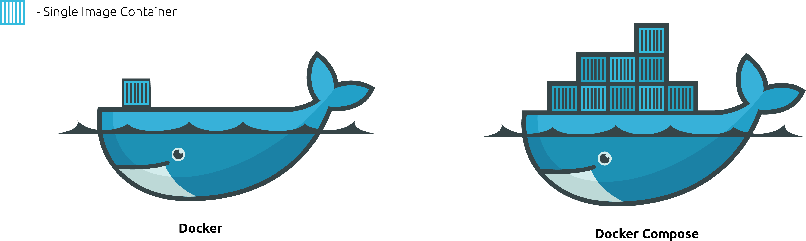

Docker and Docker Compose

Shoot
Imagine, you have an application running on your system and a database on a different server. Did you imagine? Right, now lets say you need to deploy it on a live server, on AWS or GCP or Azure, how exciting, right?
Let me give you a bigger picture, you need to take all the steps you did to setup your application or you have multiple servers where you will need to setup this application. Same number of steps again and again. Darn it.
Similarly you make changes to the now running application. Won't you think it will be too troublesome to update it.
Not just that, the environment settings, application stack you use. Tools that are required need to be ready before deploying. So much complexity, the architecture.
The biggest challenge, "IT WORKS ON MY SYSTEM" ü§∑
Okay, I get it
If I may suggest, Hello Docker!
Lot of resources on the internet will tell you, why do you need to use Docker if you are developer; A very few of them:
- Portability
- Scalability
- Faster configuration
- CI/CD
- Logging at its best.
Here's a basic idea about Docker and Docker Compose
Without wasting anymore time,
Let's Dockerize
Hoping you have already installed Docker on your system, we will begin, If not you can quickly install it from here
Firstly, we shall understand how to setup a Single container using Docker and Dockerfile
Following are the command you will need to run on your command prompt
To list of all the local images
docker images
The docker ps command only shows running containers by default.
To see all containers, use the -a (or --all) flag:
docker ps -a
To create a container and kick start it
docker run -it -v {/path/to/your/project/directory/or/home/directory}:{docker/container/path/} -p 9012:9012 {image_name}
-i- interactive shell, as in command line access to the container-t- terminal, or tty-v- the volume path - the first in the host path, that is the local system path that you want the docker container to map to : - the next part is the path inside the container that you wish to login to directly-p- this is the port forwarding for the container from the local or host machine.{image_name}- is the docker image that you want to run and get access
After successfully running this command you will get inside the container to the specified path. You can either exit the container and stop it or you can Ctrl+D to leave it running and exit. To make this sure you need to run the previous docker ps to check if it is running
To start a container that is in Existed state, First you need get the CONTAINER ID
docker ps -a
Check the output:
CONTAINER ID IMAGE COMMAND CREATED STATUS PORTS NAMES
29a462eea79c ubuntu "/bin/bash" 4 days ago Exited (255) 3 days ago 0.0.0.0:9010-9012->9010-9012/tcp ubuntu
Use the CONTAINER ID along with it to start the container
docker start 29a462eea79c
To get access to the started or already running container you need to:
docker attach 29a462eea79c
- This will lead you the same thing as you get after use the
docker run
To stop a running container you need to:
docker stop 29a462eea79c
To delete the created docker container you need to:
docker rm 29a462eea79c
Lets consider you need to create a container, customised for your own project. You have to create a Dockerfile which will have a basic setup ready for you to use when you login into that container. Giving an example of installing and running a basic Python application
Open a new file named Dockerfile in any Editor. You need not give any dot extension to this file. Paste the content given below:
# Download base image ubuntu 18.04
FROM ubuntu:18.04
# Most important of all give this your own name
MAINTAINER adityakarnik
# This will give you all the latest updates and required packages to start
RUN apt-get update \
&& apt-get install -my wget gnupg \
&& apt-get install -y --no-install-recommends \
apt-utils \
ca-certificates \
apt-transport-https \
jq \
numactl \
&& rm -rf /var/lib/apt/lists/*
RUN apt-get update
# Installing python and its dependencies
RUN apt-get install -y python-pip python-dev build-essential
# Copy the local folder of your app to docker container
# Consider this app folder in placed in the same folder as your Dockerfile
COPY app/ /app
# Navigate to yoru app directory
WORKDIR /app
# Install you application dependencies
RUN pip install -r requirements.txt
# This will the command run when you start your container
ENTRYPOINT ["python"]
# Like "python app.py", this will run when you start your container
CMD ["app.py"]Let's understand what have done here
FROM- Choose a pre-built base image from which you wish to start working on. For this example I selected the Ubuntu imageMAINTAINER- The author of the yaml fileRUN- This is similar to when you execute a command on your command prompt. We execute a few pre-requisites, fetch the latest packages with
. And lastly we install the required python toolapt-get updateCOPY- This will place the same content you have in the given folder, which is your code project files, ready to run. It states that the whole content from /app needs to be synced with the app/ folder inside the container, once created.WORKDIR- This is like you navigate to the folder ready to run the project. Just like your
command.change directory (cd)RUN- next it will install the packages from the requirement.txt file with help of pip - package installer program of pythonENTRYPOINT- is the command or parent command that you wish to run when you start the container, in this casepythonCMD- this is sub command, child command that you wish to execute after he python command above. Like
These are a list of command, where each command is separated with a space.python app.py
Next we will run and complete the execution and fire up the container
Building the image from Dockerfile
docker build --no-cache -t python .
- We gave the name, python to the image, you can choose whatever you wish to
Start the container from the image that is created.
docker run -p 5000:5000 --name python python
- Here we have exposed the port number 5000 inside out the container for accessing the application outside the container
Now you can check and confirm your application will be running on port 5000. To attach the container you can check the previous command
And this is how we run a dockerfile for single application execution. Let's also check how to stop and remove the containers
sudo docker rm $(sudo docker ps -a -q) && sudo docker rmi $(sudo docker images -q)
Now consider you have made a some changes to your environment and you need to deploy the same currently working docker to another system or make a clone of it as test environment. You will need to commit the docker
Committing the current state of the container:
docker commit 4cb998fee815 [give_it_a_name]
Creating a zip file of the container:
docker save -o [file_name.tar] [the_given_name]
Well, congratulations, now you can create your own single image container using Dockerfile. For more commands and references in Dockerfile refer here
Let's move to our next section
Docker Compose
We will quickly understand the What Why How.
Docker Compose is a next step in running a container, the only difference here is that you can fire up multiple containers at a time, where as with Dockerfile you can have only a single containers. With the use of a YAML file, setup the server for your application, with just a single command.
Call your imaginative powers again and think, if you had multi-server application, say a Application server, Database container, Worker where all the heavy lifting is done and Log server. How easy will it be to manage all of it from one file and with only a single command. Fancy? And it does work in all the systems take your test environment for example, once tested and working fine you will need to replicate the same environment on production.
One single command from the directory where you have a your
docker-compose.ymlfile, you rundocker-compose upand voila, you have it all in a couple of minutes ready. Similar to Dockerfile you will have to define a few steps, the only difference is that, you will make use of the Dockerfile in the compose file or an pre-build image.
The sample file looks something like this:
version: 3.8
services:
web:
build: .
ports:
- "5000:5000"
volumes:
- .:/code
- log:/var/log
links:
- rabbitmq
rabbitmq:
image: "rabbitmq:3-management"I suppose you already have Docker Compose on your system, we will begin, If not you can quickly install it from here
Setting some realistic goals to understand Compose, lets have a problem statement in mind.
- We have a Django application which runs on port 8100
- This application has another process which runs Celery tasks in background to continuously check some updates
- There is a postgres database running separately
- There is rabbitmq, required for queueing purpose
- Also it has Elasticsearch and Kibana running for pushing data and logs, both running independently
Sounds fun? Let's get on with it.
Create a blank docker-compose.yml
First thing you define is the version number, depending on your your Docker engine that you have installed you will need to use that version for the compose file. This is just the syntax format, difference in most versions, not all necessarily.
version: 3.8Now your file looks something like this
Next we define the Services section which is basically the different containers you wish to run, in our case six different containers with their own process setup
Name the service with something that it represents or does. Our first service is the Django application, we will define it's name as web. As stated before we will need to create a Dockerfile and state it in build.
Let's create a Dockerfile
FROM python:3.7
MAINTAINER adityakarnik
COPY . /app/
WORKDIR /app
RUN pip install -r requirements.txt
EXPOSE 8100Nothing serious, a simple file with simple syntax we discussed before, the app is already prepared and we will not go into the app code, as its off topic.
Next we get back to the compose file, stating what we have now, the Dockerfile and what is required for it.
version: 3.8
services:
web_app: # 1
build: # 2
context: . # 3
dockerfile: Dockerfile # 4
command: bash -c "python manage.py makemigrations && python manage.py migrate && python manage.py runserver 0.0.0.0:8100" # 5
volumes: # 6
- .:/app
- /root/db/:/root/db/
ports: # 7
- "8100:8100"
environment: # 8
APP_PASSWORD: "${APP_PASSWORD}"
POSTGRES_PASSWORD: "${POSTGRES_PASSWORD}"
ELASTIC_PASSWORD: "${ELASTIC_PASSWORD}"
depends_on: # 9
- web_worker
- elasticsearch
container_name: django_app # 10
networks: # 11
web_network: # 12
ipv4_address: "10.10.10.2"
restart: # 13
always # 14WOW!! There was just a single version line in there, now its like a hundreds of line of code? Yup, I have just created a that for you, we will look at each line in detail
web_app- Is the name of the service as an identifier this has to be unique. It should generally represent the operation/process is about.build- represents the image or the Dockerfile that you created earlier. This can just be a.which tell that you need to pick a Dockerfile from the current folder.context- is an optional key. It specifies where it should find the DockerfileDockerfile- name of the file you have created, the Dockerfile is standard file name. In case if you have a test environment dockerfile, you can name it something likeDockerfile.testcommand- key name clearly states what it does. It a command that you wish to execute once the container is up and runningvolumes- key mounts the project directory (current directory) on the host to /code inside the container, allowing you to modify the code on the fly, without having to rebuild the image.ports- Exposes container ports for mapping. This allows the container and the host to communicate to each other over this portenvironment- key sets the APP_PASSWORD, POSTGRES_PASSWORD and ELASTIC_PASSWORD environment variable, which tells the application to fetch wherever required these keys from its environment variable collectiondepends_on- sets the dependencies on another containers on startup and shutdowncontainer_name- it defines the custom container name to be provided to instead of the default auto generated valuenetworks- this key specifier denotes the networks that containers it is attached to and what are their different address allowed for this network. The names provided in this section are to be declared in the top level Networks section as wellweb_network- name of the network for the current servicerestart- key denotes the policy it should follow once the container is terminated. There different values such asrestart: "no" restart: always restart: on-failure restart: unless-stopped
Now on your command line, run
docker-compose upthe container will build, as its the first time, start up and run
Let us add more services to move forward next
version: 3.8
services:
web_app:
build:
context: .
dockerfile: Dockerfile
command: bash -c "python manage.py makemigrations && python manage.py migrate && python manage.py runserver 0.0.0.0:8100"
volumes:
- .:/app
- /root/db/:/root/db/
ports:
- "8100:8100"
environment:
APP_PASSWORD: "${APP_PASSWORD}"
POSTGRES_PASSWORD: "${POSTGRES_PASSWORD}"
ELASTIC_PASSWORD: "${ELASTIC_PASSWORD}"
depends_on:
- web_worker
- elasticsearch
container_name: django_app
networks:
web_network:
ipv4_address: "10.10.10.2"
restart:
always
web_worker:
build:
context: .
dockerfile: Dockerfile
command: bash -c "celery worker -A payee_name -l INFO --beat --concurrency=1 -n 'main_app'"
volumes:
- .:/app
ports:
- "8200:8200"
environment:
APP_PASSWORD: "${APP_PASSWORD}"
POSTGRES_PASSWORD: "${POSTGRES_PASSWORD}"
ELASTIC_PASSWORD: "${ELASTIC_PASSWORD}"
links:
- rabbitmq
depends_on:
- rabbitmq
- elasticsearch
container_name: web_worker
networks:
web_network:
ipv4_address: "10.10.10.3"
restart:
always
web_db:
image: "postgres"
container_name: web_db
restart: always
ports:
- 5432:5432
environment:
POSTGRES_HOST: "web_host"
POSTGRES_PORT: "5432"
POSTGRES_USER: "web"
POSTGRES_PASSWORD: "${POSTGRES_PASSWORD}"
POSTGRES_DB: "Web"
PG_DATA: "/var/lib/postgresql/data"
volumes:
- /var/lib/postgresql/data:/var/lib/postgresql/data
- ./init.sql:/docker-entrypoint-initdb.d/init.sql
- ./init-user-db.sh:/docker-entrypoint-initdb.d/init-user-db.sh
networks:
web_network:
ipv4_address: "10.10.10.4"
rabbitmq:
image: "rabbitmq:3-management"
hostname: "rabbitmq"
environment:
RABBITMQ_ERLANG_COOKIE: "SWQOKODSQALRPCLNMEQG"
RABBITMQ_DEFAULT_USER: "rabbitmq"
RABBITMQ_DEFAULT_PASS: "rabbitmq"
RABBITMQ_DEFAULT_VHOST: "/"
ports:
- '5672:5672'
- '15672:15672'
labels:
NAME: "rabbitmq"
container_name: rabbitmq
volumes:
- 'app_elk_data:/bitnami'
networks:
web_network:
ipv4_address: "10.10.10.5"
restart:
always
elasticsearch:
build:
context: ../app_elk/elasticsearch/
args:
ELK_VERSION: 7.0.1
volumes:
- ../app_elk/elasticsearch/config/elasticsearch.yml:/usr/share/elasticsearch/config/elasticsearch.yml:ro
- /etc/timezone:/etc/timezone
- ../app_elk/elasticsearch/data:/usr/share/elasticsearch/data
ports:
- "9200:9200"
- "9300:9300"
environment:
ES_JAVA_OPTS: "-Xmx2560m -Xms2560m"
ELASTIC_PASSWORD: "${ELASTIC_PASSWORD}"
http.cors.enabled: "true"
http.cors.allow-origin: "*"
container_name: elasticsearch
networks:
web_network:
ipv4_address: "10.10.10.6"
restart:
always
kibana:
build:
context: ../app_elk/kibana/
args:
ELK_VERSION: 7.0.1
volumes:
- ../app_elk/kibana/config/kibana.yml:/usr/share/kibana/config/kibana.yml:ro
- /etc/timezone:/etc/timezone
ports:
- "5601:5601"
networks:
web_network:
ipv4_address: "10.10.10.7"
container_name: kibana
depends_on:
- elasticsearch
restart:
always
volumes:
app_elk_data:
external: true
networks:
web_network:
driver: overlay
ipam:
config:
- subnet: 10.10.10.0/16
gateway: 10.10.10.1There, this is the complete code for the docker compose file.
If you go through the code you will notice there six different containers in all. Each service has similar set of keys
buildcommandvolumesportsenvironmentdepends_oncontainer_namenetworksrestart
If you take a closer look at the service web_db and rabbitmq you will notice a new set of key image
If you remember we had discussed this earlier that instead of build we use the key image for using already created images.
This is helpful in case if you don't wish to make any modifications on the existing image. Otherwise there is always the Dockerfile where you can modify as per your requirement
Next, in the bottom, if you notice there is another top level key networks and volumes
- Networks - will create and attach all the containers in given network name. It also provides all the details about the subnet and gateway and what type of networks should be created
- Volumes - creates a separate space in the host common to all the containers where you can modify the code and all the changes reflect in realtime.
Let's consider a scenario where you need to update your code for new features and development, in normal case you will need to recreate the image, build and re run.
In case of volumes you need not to that, the code mapping is already done.
Well, Congratulations we have covered all the major important points for you get started with your first application
Summarize
Firstly we saw all the command that are required for running a pre-built image and what re most common commands you will need
We created a Dockerfile, understood the Dockerfile in detail and ran all the basic command to start and terminate the same
Exporting a running image is easy with just two commands
Next is Docker Compose, we have saw how it can be helpful while you are running a huge application and has several different dependant services
How to create a compose file and what the general keys you need to start the container
The whole of the application, what it needs to do when interacting with multiple containers
Credits
I would like to point out the major help I took from the github page where the ELK docker is present here
Without Docker, this blog does not exists
Thank you
The raw post is here and here and it has taken a long time for me to come up with it
Do let me know your feedback and contact me from below links
✌️